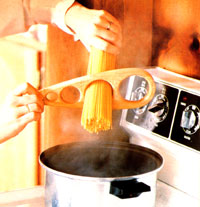

OK, we'll admit it ... this particular kitchen gadget isn't a necessity by any stretch of the imagination. But we still think it's valuable enough to make some folks want to knock out a few samples and give them to pasta-eating friends as gifts.
To tackle the project, you'll need a scrap of wood measuring 3/4" X 3-1/2" X 10", a series of hole saws (or an expansive bit that can cut openings up to 2-1/2" in diameter), a ruler, and a coping saw. First, sketch the general shape of the wooden wand onto your slab, using our photo as a guide, then cut along that mark-with the coping saw-to form a teardrop-shaped billet.
Next, scribe a longitudinal line down the center of this board, and, starting at the narrow end, measure off four points-at distances of 1-1/2 inches, 3-1/8 inches, 5-7/16 inches, and 8-1/4 inches-along the line. By drilling 7/8", 1-1/2", 2-1/4", and 2-1/2" openings successively at these points, you can form a hand-held gauge similar to the one pictured.
To finish it up, round the utensil's sharp edges with some coarse sandpaper, smooth the grain further with fine-grit paper, and dress the wood with vegetable oil.
And using the device is easier than threading a needle: All you do is grab a handful of spaghetti strands and slip them through one of the holes. The size of the opening, of course, determines the number of servings (or the size of a portion). After a little trial-and-error experimentation, you can match the hole choices to your family's appetite . . . or simply resize the bores on a fresh blank to suit your needs.
|
 |
|
|